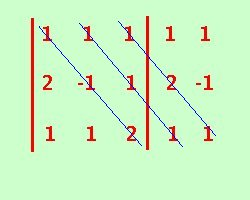
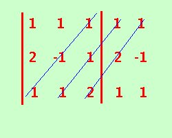

|
Quando ci limitiamo a sistemi di 3 equazioni in 3 incognite, e se il determinante non ha elementi nulli, conviene utilizzare la regola di Sarrus per calcolarne il valore; la useremo nella forma piu' semplice consideriamo un determinante del terzo ordine
riporto accanto al determinante le prime due colonne
D = a1,1·a2,2·a3,3 + a1,2·a2,3·a3,1 + a1,3·a2,1·a3,2 - a1,3·a2,2·a3,1 - a1,1·a2,3·a3,2 - a1,2·a2,1·a3,3 + cioe' moltiplico tra loro gli elementi della diagonale principale e tra loro gli elementi delle due diagonali parallele che si sono formate e poi sottraggo il prodotto degli elementi della diagonale secondaria ed anche i prodotti degli elementi per le due diagonali parallele alla secondaria Per memorizzarlo meglio si puo' esprimere graficamente in questo modo: Vediamo come utilizzarla direttamente da un esempio: riprendiamo il determinante gia' calcolato col metodo normale
Ora applico la regola di Sarrus  -  = 1·(-1)·2 + 1·1·1 + 1·2·1 - 1·(-1)·1 - 1·1·1 - 1·2·2 = -2 + 1 + 2 + 1 - 1 - 4 = -3 |

|

|

|

|